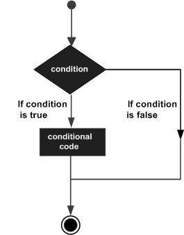
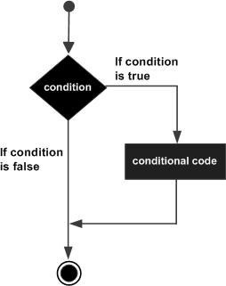
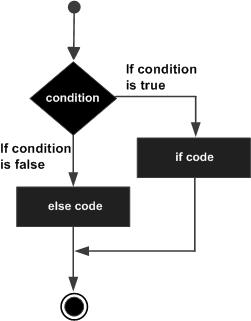

Sentencias condicionales en TypeScript
Las sentencias condicionales se utilizan para ejecutar diferentes acciones según diferentes condiciones.
Las sentencias condicionales en TypeScript determinan el bloque de código a ejecutar basándose en el resultado (true o false) de una o más sentencias.
Puede comprender fácilmente el proceso de ejecución de las sentencias condicionales mediante el siguiente diagrama:

Sentencias condicionales
Normalmente, al escribir código, siempre necesita ejecutar diferentes acciones para diferentes decisiones. Puede utilizar sentencias condicionales en el código para realizar esa tarea.
En TypeScript, podemos utilizar las siguientes sentencias condicionales:
- Sentencia if- Utilice esta sentencia para ejecutar código solo cuando la condición especificada sea true.
- Sentencia if...else- Ejecuta código cuando la condición es true, y ejecuta otro código cuando la condición es false.
- Sentencia if...else if....else- Utilice esta sentencia para seleccionar uno de varios bloques de código para ejecutar.
- Sentencia switch- Utilice esta sentencia para seleccionar uno de varios bloques de código para ejecutar.
Sentencia if
La sentencia if en TypeScript está compuesta por una expresión booleana seguida de una o más sentencias.
Sintaxis
El formato de sintaxis es el siguiente:
if(boolean_expression){
# 在布尔表达式 boolean_expression 为 true 执行
}
Si la expresión booleana boolean_expression es true, se ejecutará el bloque de código dentro de la sentencia if. Si la expresión booleana es false, se ejecutará el primer conjunto de código después de la sentencia if (después de la llave de cierre).
Diagrama de flujo

Ejemplo
Al compilar el código anterior se obtiene el siguiente código JavaScript:
Al ejecutar el código JavaScript anterior, el resultado es:
El número es positivo
Sentencia if...else
Una sentencia if puede ir seguida de una sentencia else opcional, que se ejecuta cuando la expresión booleana es false.
Sintaxis
El formato de sintaxis es el siguiente:
if(boolean_expression){
# 在布尔表达式 boolean_expression 为 true 执行
}else{
# 在布尔表达式 boolean_expression 为 false 执行
}
Si la expresión booleana boolean_expression es true, se ejecuta el código dentro del bloque if. Si la expresión booleana es false, se ejecuta el código dentro del bloque else.
Diagrama de flujo

Ejemplo
TypeScript
Al compilar el código anterior se obtiene el siguiente código JavaScript:
JavaScript
Al ejecutar el código JavaScript anterior, el resultado es:
Número par
Sentencia if...else if....else
La sentencia if...else if....else es útil cuando se evalúan múltiples condiciones.
Sintaxis
El formato de sintaxis es el siguiente:
if(boolean_expression 1) {
# 在布尔表达式 boolean_expression 1 为 true 执行
} else if( boolean_expression 2) {
# 在布尔表达式 boolean_expression 2 为 true 执行
} else if( boolean_expression 3) {
# 在布尔表达式 boolean_expression 3 为 true 执行
} else {
# 布尔表达式的条件都为 false 时执行
}
Debe tener en cuenta los siguientes puntos:
Unaifsentencia condicional puede tener 0 o 1elsesentencia, y debe estarelse..ifdespués de la sentencia.
Unaifsentencia condicional puede tener 0 o máselse..if, estas sentencias deben estarelseantes.
Una vez que se ejecutaelse..ifel código dentro de, los siguienteselse..ifoelseya no se ejecutarán.
Ejemplo
TypeScript
Al compilar el código anterior se obtiene el siguiente código JavaScript:
JavaScript
Al ejecutar el código JavaScript anterior, el resultado es:
2 是正数
Sentencia switch…case
UnswitchLa sentencia permite probar casos en los que una variable es igual a múltiples valores. Cada valor se denomina un case, y la variable probada se examina contra cadaswitch casecase para su comprobación.
switchSintaxis de la sentencia:
switchLa sentencia debe seguir las siguientes reglas:
- switchEn la sentenciaexpressiones una expresión que se va a comparar, puede ser de cualquier tipo, incluidos tipos de datos básicos (como number, string, boolean), tipos de objeto (como object, Array, Map) y tipos personalizados (como class, interface, enum), etc.
- En un switch puede haber cualquier cantidad de sentencias case. Cada case va seguido de un valor a comparar y dos puntos.
- La expresión del caseconstant-expressiondebe tener el mismo tipo de datos o un tipo compatible con la variable expression del switch.
- Cuando la variable probada es igual a la constante del case, las sentencias después del case se ejecutan hasta que se encuentrabreakla sentencia break.
- Cuando se encuentrabreakla sentencia break, switch termina y el flujo de control saltará a la siguiente línea después de la sentencia switch.
- No todos los case necesitan incluirbreak. Si la sentencia case no incluyebreak, el flujo de controlcontinuarácon los case siguientes, hasta que se encuentre un break.
- Unaswitchsentencia puede tener un opcionaldefaultcase, que aparece al final del switch. La palabra clave default indica el bloque de código que se ejecuta cuando el valor de la expresión no coincide con ningún valor de case. En el case default, labreaksentencia no es obligatoria.
Diagrama de flujo

Ejemplo
TypeScript
Al compilar el código anterior se obtiene el siguiente código JavaScript:
JavaScript
Al ejecutar el código JavaScript anterior, el resultado es:
ExcelenteOtras extensiones